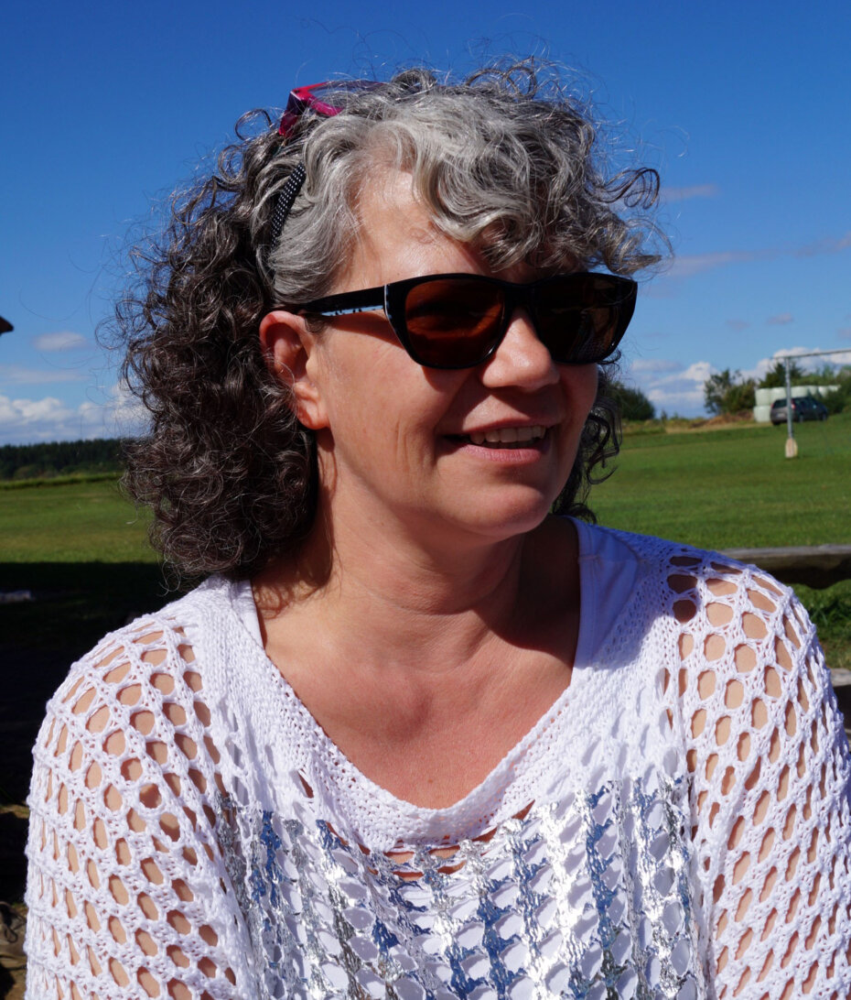
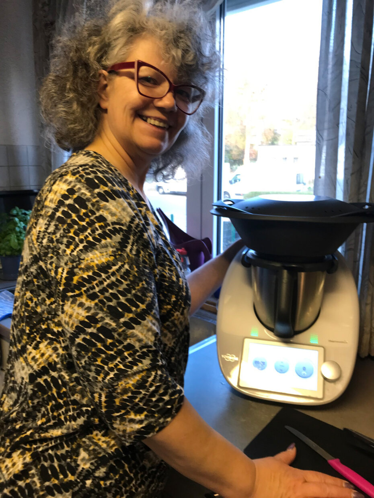
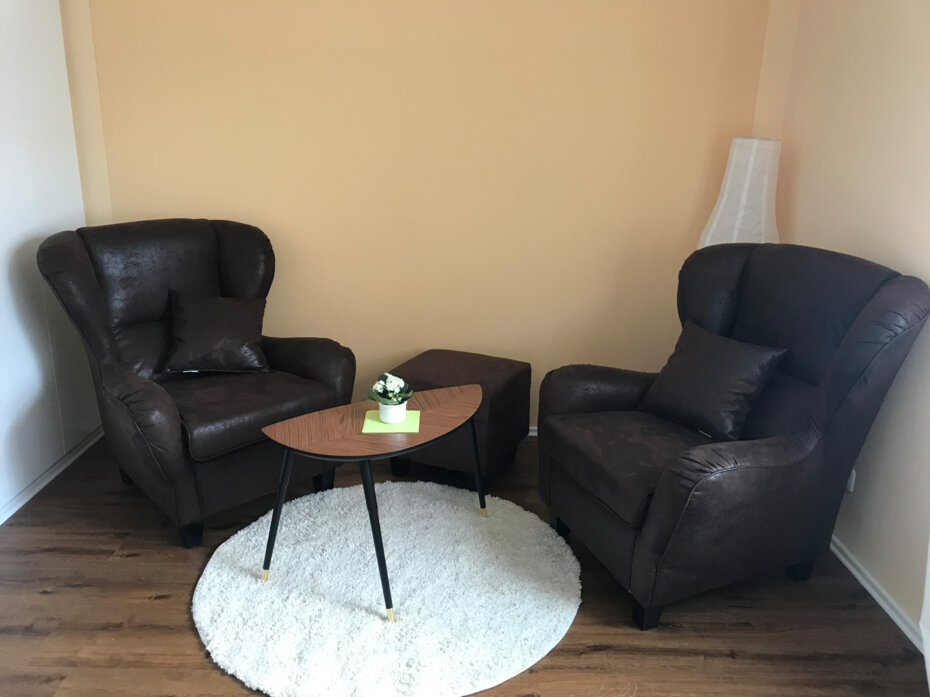
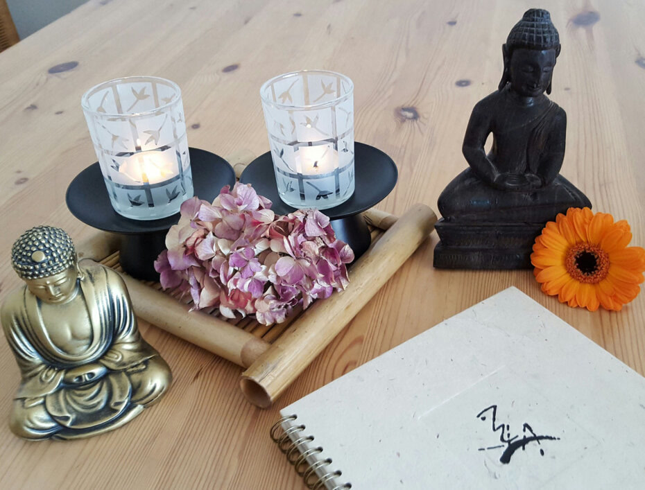
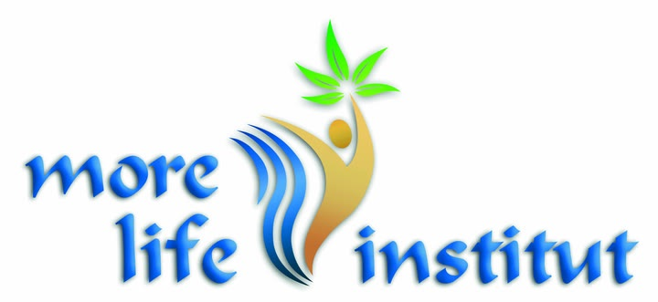
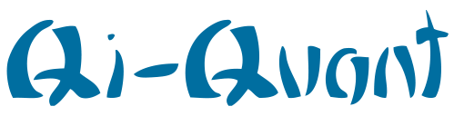
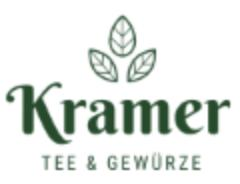

Zellgesundheit, Vitalstoffe & Basenkur.
Ganzheitliche Beratung bei Andrea Mirku,
ärztlich geprüfte Diplom-GesundheitsberaterinEuropäische Akademie für Naturheilverfahren und Umweltmedizin
Mo–Fr, 07:00–20:00 Uhr · Beratung nur nach Terminvereinbarung

gegründet

Meine Ausbildungen
- Ärztlich geprüfte Dipl.-Gesundheitsberaterin
- Ausbildung zur Apothekenhelferin
- Ausbildung zur Gesundheitsberaterin bei der Europäischen Akademie für Naturheilverfahren und Umweltmedizin
- Basenkur-Leiterin nach P. Jentschura
- Fachfortbildung für bioenergetische Revitalisierung
Mein Name istAndrea Mirku.
Ich habe eine Ausbildung zur Apothekenhelferin absolviert.
Meine eigene Lebensgeschichte hat mich dazu bewegt, nach ganzheitlichen Wegen zu mehr Wohlbefinden zu suchen.
Dank entsprechender Zusatzausbildungen kann ich heute Menschen mit meinem Wissen unterstützen – als verlässliche Ansprechpartnerin in der Gesundheitsvorsorge und in vielen weiteren Bereichen.
Ein Blick in meine Praxis
Vier Themen, ein Ziel:
Ihr Wohlbefinden.
Ernährung
Auszeit
für den Körper
Lebensweise
für Ihr Wohlbefinden
Energiezufuhr
des Körpers
Der Vier-Schritte-Plan
Analyse
Ausführliches Gespräch über Ihre Ernährung, Ihren Alltag und Ihr Wohlbefinden
Empfehlung
Auswertung und individuelle Empfehlung
Nachgespräch
in drei bis vier Wochen zur Fortschrittskontrolle
Betreuung
Nachgespräch in weiteren zwei bis vier Wochen für die nachhaltige Betreuung
Was ich für Sie tun kann
- Bioenergetische Revitalisierung
- Gesundheitsprodukte
- Basische Anwendungen Basenkur nach P. Jentschura
- Heil- und Basenfastenkurse
- Ernährungsberatung
- Gespräch rund um Ihre Medikamenteneinnahme zur Vorbereitung Ihrer Fragen an Ärztin, Arzt oder Apotheke – keine pharmazeutische Beratung, Änderungen nur nach ärztlicher Rücksprache
- Seminare und Gesundheitsvorträge zu CBD-Ölen, Basenkuren, Bachblüten, Schüssler-Salzen, Unverträglichkeiten und vielem mehr
- Wellnessanwendungen


In meiner Beratungspraxis nehme ich mir Zeit für ein ausführliches, ganzheitliches Gespräch über Ihre Ernährung, Ihren Alltag und Ihr Wohlbefinden. Einfache ergänzende Tests zum Säure-Basen-Haushalt können die Beratung abrunden; sie ersetzen keine ärztliche Untersuchung.
Auf dieser Basis erhalten Sie gezielte, individuell abgestimmte Vorschläge, die Sie sofort und einfach zu Hause umsetzen können.
So können Sie Schritt für Schritt etwas Gutes für Ihr Wohlbefinden tun.
Für alle Fragen rund um Ihre Gesundheit bin ich gerne für Sie da!

Bioenergetische Revitalisierung
Eine sanfte Methode, die zur Entspannung beitragen kann – besonders im Rückenbereich. Viele Menschen spüren dabei, wie Muskeln und Bänder lockerer werden. Entspannung ist unser Zauberwort.
Die Anwendung kann als Wohlfühlanwendung eine ärztliche Behandlung ergänzen – sie ersetzt sie nicht.
Ältere Menschen nehmen eine Anwendung am besten monatlich, vierteljährlich oder halbjährlich in Anspruch.
„Ein entspannter Rücken ist ein Geschenk an uns selbst.“
Mehr über die Methode
Betrachten wir unseren Körper einmal von dieser Seite. Die Abläufe darin sind wundervoll organisiert. Wir sollten nur darauf achten, dass dieser perfekte Mechanismus nicht gestört und das Natürliche erhalten wird.
Hier kann die bioenergetische Revitalisierung – eine sanfte Methode – schonend Verspannungen lösen.
Sie spüren, wie Muskeln und Rücken locker werden dürfen. Viele empfinden danach ein angenehmes Gefühl von Ruhe und innerer Balance.
Gönnen Sie sich diese sanfte, einfache Anwendung – eine Auszeit für Körper und Seele, die viele als tief entspannend erleben.
Ein wohliges Gefühl von neuer Ausrichtung – wie ein Zauber – darf sich in Ihrem Körper ausdehnen.
Nehmen Sie sich Zeit für sich und erleben Sie diese sanfte Wohlfühlanwendung selbst!
Ich bin gerne für Sie da – DANKE für Ihr Vertrauen!
Entspannung ist unser Zauberwort
Gezaubert wird dabei natürlich nicht: Auf besonders schonende Weise möchte ich zur Entspannung von Muskeln und Bändern, besonders im Rückenbereich, beitragen. Ziel ist, dass Sie sich rundum entspannt und wohl fühlen.
Die Organisation von Körperfunktionen wird vorrangig über Nervenbahnen realisiert. Das Organisationszentrum befindet sich in unserem Gehirn. Dort wird gesteuert, ausgewertet und veranlasst. Informationen gelangen dann über Nervenzellen in Rückenmark und Wirbelsäule zu den unterschiedlichen Bereichen in unserem Körper und zu jeder einzelnen Zelle. Die Zellen geben darüber hinaus der Zentrale Bescheid. Dort wird wieder ausgewertet und neue angepasste Impulse in genau das richtige Körpergebiet gesendet. Unser Nervensystem leistet dabei jeden Tag Erstaunliches.
Die Wirbelsäule schützt diese Nervenwege. Ein entspannter, gut gepflegter Rücken trägt viel zu unserem Wohlbefinden bei.
Die Anwendung kann eine ärztliche Behandlung als Wohlfühlanwendung ergänzen. Ich empfehle, sie nach dem ersten Mal in etwa acht Tagen und dann nach weiteren vier Wochen zu wiederholen. Ältere Menschen genießen eine Anwendung am besten regelmäßig – monatlich, vierteljährlich oder halbjährlich.
Was Sie bei mir erhalten
P. Jentschura
Basen-Salz, Tees, Mineralien, Bürsten und Lebensmittel; Tücher, Strümpfe und Bekleidung aus Bio-Baumwolle
Qi Quant
diverse Energieplatten von Qi Quant
Blütenessenz-Mischungen
individuell auf Ihre Bedürfnisse abgestimmt
Gesundheitsliteratur
Thermomix®
Für eine gesunde und bewusste Ernährung: einfach, frisch, naturbelassen, zeitsparend, kreativ und lecker. So bleiben Sie fit und gesund. Sie erhalten bei mir eine erstklassige Beratung und einen Top-Service – gerne auch bei Ihnen zu Hause als Erlebniskochen oder online.

Meine Partner

More Life InstitutWebsite ↗
Qi-Quant P. Jentschura
P. Jentschura
Kramer Tee & GewürzeIch freue mich auf Ihre Anfrage!
Für eine telefonische Terminvereinbarung erreichen Sie mich unter:
+49 151 67212085Beratung nur nach vorheriger Terminvereinbarung.
Meine Leistungen werden privat abgerechnet.
- Praxis
- Andrea Mirku Gesundheitsberaterin
Doggenriedstraße 43
88250 Weingarten
Route planen - Telefonisch erreichbar
- Montag bis Freitag, 07:00–20:00 Uhr
- info@andrea-mirku.de